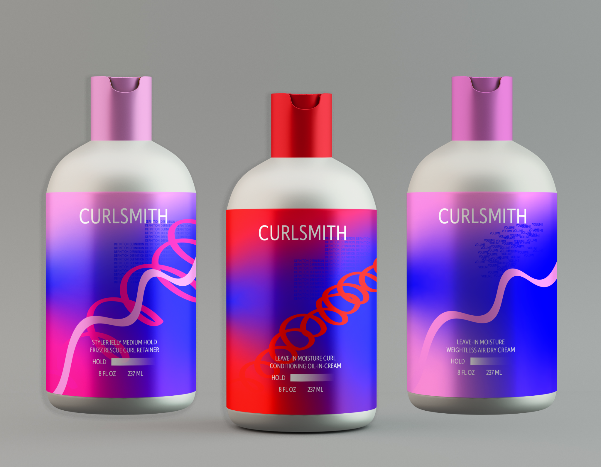
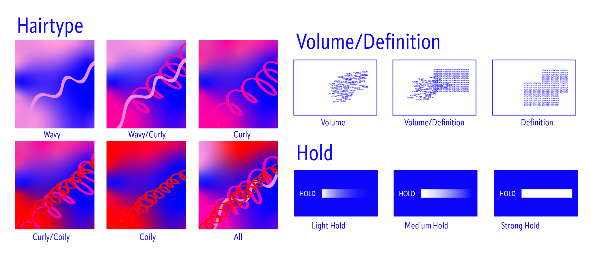
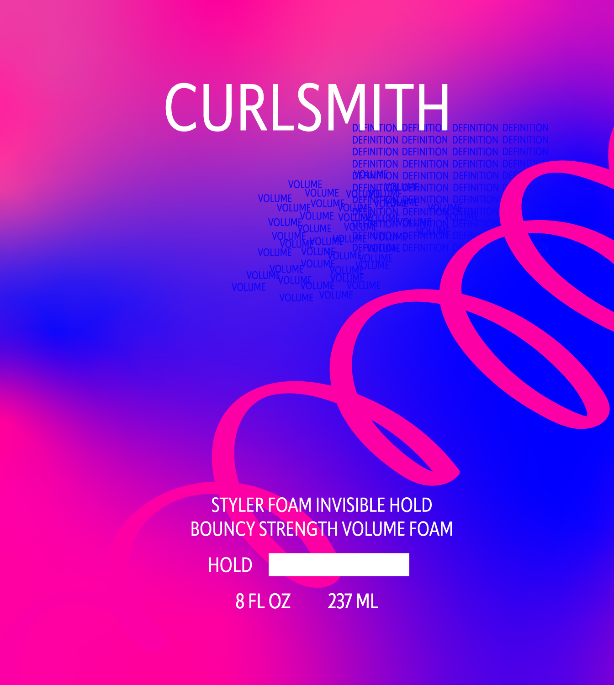
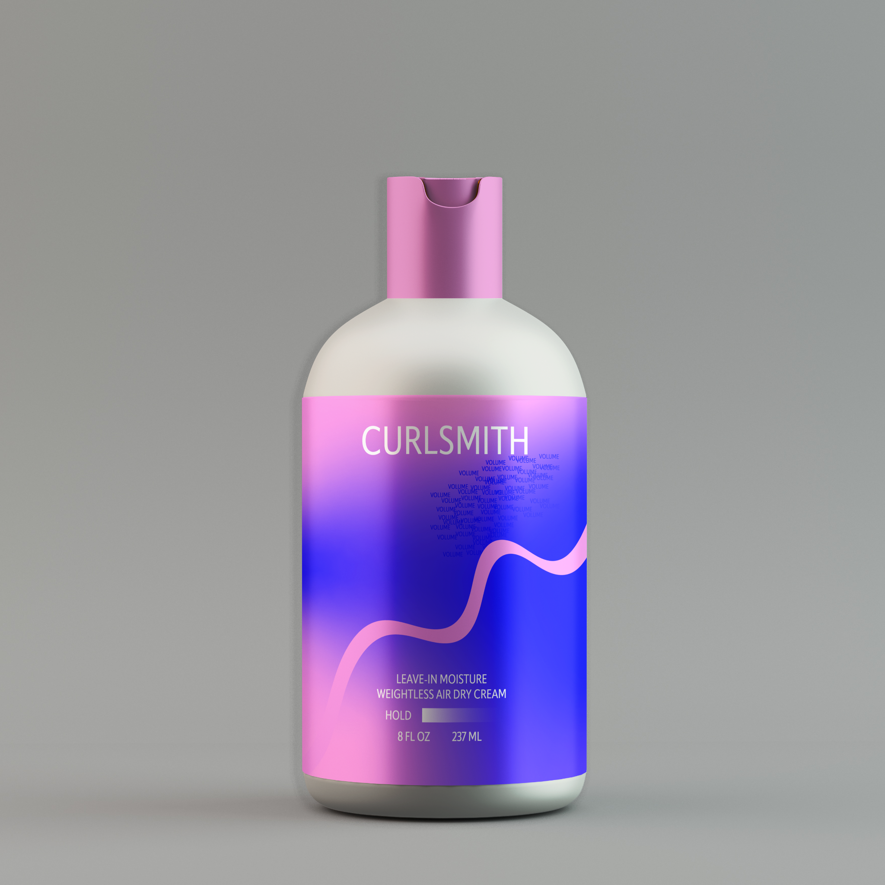

Curlsmith
Reimagining curly hair packaging so finding the right product feels a little less confusing and a lot more intuitive
Finding the right curl product shouldn't be a guessing game.
Growing up with curly hair, I struggled to find products that actually worked for my curl type. Some were too heavy others were too light and it wasn't always easy to tell what I was buying from the packaging.
I used Curlsmith, one of my favorite curly hair brands, to explore a packaging system that makes it easier to recognize your curl type, desired volume or definition, and level of hold before choosing a product.
Making the differences visible.
I created a set of visual cues for three things people think about when styling curls: hair type, volume versus definition, and hold. The goal was to make the information easy to compare without needing to read every bottle.

Hair type moves from wavy to coily; the visual language changes with curl pattern and product characteristics.
Curls have energy. The packaging should too.
I used bright, expressive gradients and curling lines inspired by the movement of hair. As the curl pattern becomes tighter, the colors get more intense to communicate different characteristics.
Typography was informed by Curlsmith's existing identity. I kept that brand connection in mind while exploring a softer type treatment that wouldn't compete with the graphic elements.


One family, different curl needs.
Even with different colors and patterns, the bottles use a consistent structure so the range feels connected, and differences between products are easier to spot.
A packaging system you can actually interact with.
I also designed and coded a website using HTML, CSS, and JavaScript. It explores two directions: customizing a product's packaging and displaying products automatically from spreadsheet-based information.
Instead of redesigning each label manually, the idea was to let updates to the underlying data populate packaging variations through the same design system.
Visit the interactive project ↗Designing for clarity and personality.
This project let me combine packaging, visual systems, and coding in one experience. My goal wasn't only to make the bottles look more fun, but to explore how a visual system could help someone understand their options and how the same design can scale across products.
It's a concept exploration, so I haven't included performance metrics or user-testing results that weren't part of the project.